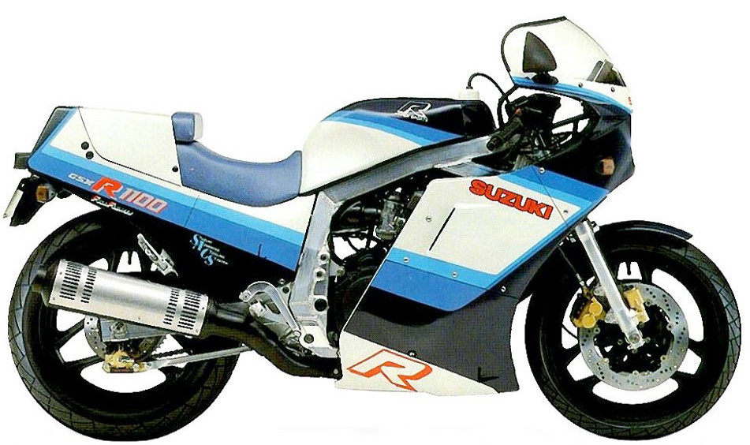

This web page is to document my attempt to convert a basket-case of a motorcycle I bought over 10 years ago, into a decent running bike. The bike is a Suzuki GSXR 1100 from 1986, one of the fastest bikes of it's time and an icon for certain teenage boy at that time :-)
This site is not a How-To in any way, but rather my photos, comments, notes, etc. compiled and made public for you to dig through, laugh at, maybe learn from, and hopefully send me a comment to keep me going
This is what the bike looked like when it was new:

I'll be creating links to different stages of the project below:
Sometime in 2012 - Locating and purchasing